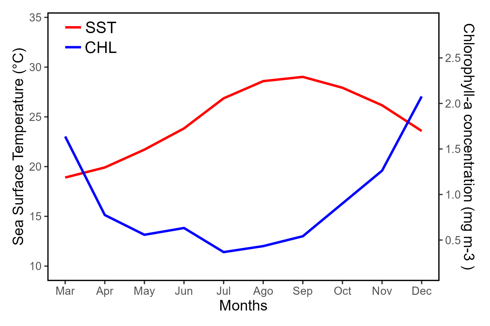

library("rerddap")Secondary-axis environmental plot
r
ggplot2
Y2024
gis
Create a secondary-axis plot from SST and CHL.
Intro
This post is to create a plot with environmental variables, in one axis the sea surface temperature and in the other axis the chlorophyll-a concentration.
- Download data from the server
- Calculate average values
- Create a secondary-axis plot with the values
Load data
Load the package rerddap
SST: sea surface temperature
For obtaining data, download sea surface temperature (SST) from erdMWsstd1day_LonPM180 (link here).
Another option is erdMW1sstd1day (link here).
To search other options here.
sstInfo <- info('erdMWsstd1day_LonPM180')To subset the data select the coordinates of a smaller area.
lonmin<--111
lonmax<--109
latmin<-23
latmax<-27To download, provide the parameters such as the server, the coordinates and the time frame. It takes some time to download.
SST03.2023<-griddap(sstInfo,
latitude= c(latmin, latmax), longitude = c(lonmin, lonmax),
time = c('2023-03-01T00:00:00Z','2023-03-30T00:00:00Z'),
fields = 'sst')
SST04.2023<-griddap(sstInfo,
latitude= c(latmin, latmax), longitude = c(lonmin, lonmax),
time = c('2023-04-01T00:00:00Z','2023-04-30T00:00:00Z'),
fields = 'sst')
SST05.2023<-griddap(sstInfo,
latitude= c(latmin, latmax), longitude = c(lonmin, lonmax),
time = c('2023-05-01T00:00:00Z','2023-05-30T00:00:00Z'),
fields = 'sst')
SST06.2023<-griddap(sstInfo,
latitude= c(latmin, latmax), longitude = c(lonmin, lonmax),
time = c('2023-06-01T00:00:00Z','2023-06-30T00:00:00Z'),
fields = 'sst')
SST07.2023<-griddap(sstInfo,
latitude= c(latmin, latmax), longitude = c(lonmin, lonmax),
time = c('2023-07-01T00:00:00Z','2023-07-30T00:00:00Z'),
fields = 'sst')
SST08.2023<-griddap(sstInfo,
latitude= c(latmin, latmax), longitude = c(lonmin, lonmax),
time = c('2023-08-01T00:00:00Z','2023-08-30T00:00:00Z'),
fields = 'sst')
SST09.2023<-griddap(sstInfo,
latitude= c(latmin, latmax), longitude = c(lonmin, lonmax),
time = c('2023-09-01T00:00:00Z','2023-09-30T00:00:00Z'),
fields = 'sst')
SST10.2023<-griddap(sstInfo,
latitude= c(latmin, latmax), longitude = c(lonmin, lonmax),
time = c('2023-10-01T00:00:00Z','2023-10-30T00:00:00Z'),
fields = 'sst')
SST11.2023<-griddap(sstInfo,
latitude= c(latmin, latmax), longitude = c(lonmin, lonmax),
time = c('2023-11-01T00:00:00Z','2023-11-30T00:00:00Z'),
fields = 'sst')
SST12.2023<-griddap(sstInfo,
latitude= c(latmin, latmax), longitude = c(lonmin, lonmax),
time = c('2023-12-01T00:00:00Z','2023-12-30T00:00:00Z'),
fields = 'sst')CHL: chlorophyll-a concentration
To download chlorophyll concentration (CHL) data, connect to erdMWchlamday_LonPM180 (here the link.
Another option is erdMW1CHLd1day (here the link)
CHLInfo <- info('erdMWchlamday_LonPM180')To subset the data select the coordinates of a smaller area.
To download, provide the parameters such as the server, the coordinates and the time frame. It takes some time to download.
CHL03.2023<-griddap(CHLInfo,
latitude = c(latmin, latmax), longitude = c(lonmin, lonmax),
time = c('2023-03-01T00:00:00Z','2023-03-30T00:00:00Z'),
fields = 'chlorophyll')
CHL04.2023<-griddap(CHLInfo,
latitude = c(latmin, latmax), longitude = c(lonmin, lonmax),
time = c('2023-04-01T00:00:00Z','2023-04-30T00:00:00Z'),
fields = 'chlorophyll')
CHL05.2023<-griddap(CHLInfo,
latitude = c(latmin, latmax), longitude = c(lonmin, lonmax),
time = c('2023-05-01T00:00:00Z','2023-05-30T00:00:00Z'),
fields = 'chlorophyll')
CHL06.2023<-griddap(CHLInfo,
latitude = c(latmin, latmax), longitude = c(lonmin, lonmax),
time = c('2023-06-01T00:00:00Z','2023-06-30T00:00:00Z'),
fields = 'chlorophyll')
CHL07.2023<-griddap(CHLInfo,
latitude = c(latmin, latmax), longitude = c(lonmin, lonmax),
time = c('2023-07-01T00:00:00Z','2023-07-30T00:00:00Z'),
fields = 'chlorophyll')
CHL08.2023<-griddap(CHLInfo,
latitude = c(latmin, latmax), longitude = c(lonmin, lonmax),
time = c('2023-08-01T00:00:00Z','2023-08-30T00:00:00Z'),
fields = 'chlorophyll')
CHL09.2023<-griddap(CHLInfo,
latitude = c(latmin, latmax), longitude = c(lonmin, lonmax),
time = c('2023-09-01T00:00:00Z','2023-09-30T00:00:00Z'),
fields ='chlorophyll')
CHL10.2023<-griddap(CHLInfo,
latitude = c(latmin, latmax), longitude = c(lonmin, lonmax),
time = c('2023-10-01T00:00:00Z','2023-10-30T00:00:00Z'),
fields ='chlorophyll')
CHL11.2023<-griddap(CHLInfo,
latitude = c(latmin, latmax), longitude = c(lonmin, lonmax),
time = c('2023-11-01T00:00:00Z','2023-11-30T00:00:00Z'),
fields = 'chlorophyll')
CHL12.2023<-griddap(CHLInfo,
latitude = c(latmin, latmax), longitude = c(lonmin, lonmax),
time = c('2023-12-01T00:00:00Z','2023-12-30T00:00:00Z'),
fields = 'chlorophyll')Average values
Load the package tidyverse.
library(tidyverse)SST: sea surface temperature
To calculate average values the best is to transform the data into a data frame.
SST03.2023dt<-SST03.2023$data
SST04.2023dt<-SST04.2023$data
SST05.2023dt<-SST05.2023$data
SST06.2023dt<-SST06.2023$data
SST07.2023dt<-SST07.2023$data
SST08.2023dt<-SST08.2023$data
SST09.2023dt<-SST09.2023$data
SST10.2023dt<-SST10.2023$data
SST11.2023dt<-SST11.2023$data
SST12.2023dt<-SST12.2023$dataFunctions from the package tidyverse can be used to calculate the mean values.
The xaxis would be in numeric value for the plot.
SST03.2023dt_clean<-SST03.2023dt %>% drop_na(sst) %>%
summarise(mean_sst=mean(sst),sd_sst=sd(sst))%>%
mutate(month='03/2023', xaxis=1)
SST04.2023dt_clean<-SST04.2023dt %>% drop_na(sst) %>%
summarise(mean_sst=mean(sst),sd_sst=sd(sst))%>%
mutate(month='04/2023', xaxis=2)
SST05.2023dt_clean<-SST05.2023dt %>% drop_na(sst) %>%
summarise(mean_sst=mean(sst),sd_sst=sd(sst))%>%
mutate(month='05/2023', xaxis=3)
SST06.2023dt_clean<-SST06.2023dt %>% drop_na(sst) %>%
summarise(mean_sst=mean(sst),sd_sst=sd(sst))%>%
mutate(month='06/2023', xaxis=4)
SST07.2023dt_clean<-SST07.2023dt %>% drop_na(sst) %>%
summarise(mean_sst=mean(sst),sd_sst=sd(sst))%>%
mutate(month='07/2023', xaxis=5)
SST08.2023dt_clean<-SST08.2023dt %>% drop_na(sst) %>%
summarise(mean_sst=mean(sst),sd_sst=sd(sst))%>%
mutate(month='08/2023', xaxis=6)
SST09.2023dt_clean<-SST09.2023dt %>% drop_na(sst) %>%
summarise(mean_sst=mean(sst),sd_sst=sd(sst))%>%
mutate(month='09/2023', xaxis=7)
SST10.2023dt_clean<-SST10.2023dt %>% drop_na(sst) %>%
summarise(mean_sst=mean(sst),sd_sst=sd(sst))%>%
mutate(month='10/2023', xaxis=8)
SST11.2023dt_clean<-SST11.2023dt %>% drop_na(sst) %>%
summarise(mean_sst=mean(sst),sd_sst=sd(sst))%>%
mutate(month='11/2023', xaxis=9)
SST12.2023dt_clean<-SST12.2023dt %>% drop_na(sst) %>%
summarise(mean_sst=mean(sst),sd_sst=sd(sst))%>%
mutate(month='12/2023', xaxis=10)Now join into a single data frame.
SST_months<-rbind(SST03.2023dt_clean,
SST04.2023dt_clean,
SST05.2023dt_clean,
SST06.2023dt_clean,
SST07.2023dt_clean,
SST08.2023dt_clean,
SST09.2023dt_clean,
SST10.2023dt_clean,
SST11.2023dt_clean,
SST12.2023dt_clean
)CHL: chlorophyll-a concentration
The same procedure used with SST, would be used with CHL.
Convert to data frame.
CHL03.2023dt<-CHL03.2023$data
CHL04.2023dt<-CHL04.2023$data
CHL05.2023dt<-CHL05.2023$data
CHL06.2023dt<-CHL06.2023$data
CHL07.2023dt<-CHL07.2023$data
CHL08.2023dt<-CHL08.2023$data
CHL09.2023dt<-CHL09.2023$data
CHL10.2023dt<-CHL10.2023$data
CHL11.2023dt<-CHL11.2023$data
CHL12.2023dt<-CHL12.2023$dataCalculate the mean values. Include the xaxis.
CHL03.2023dt_clean<-CHL03.2023dt %>% drop_na(chlorophyll) %>%
summarise(mean_CHL=mean(chlorophyll),sd_CHL=sd(chlorophyll))%>%
mutate(month='03/2023', xaxis=1)
CHL04.2023dt_clean<-CHL04.2023dt %>% drop_na(chlorophyll) %>%
summarise(mean_CHL=mean(chlorophyll),sd_CHL=sd(chlorophyll))%>%
mutate(month='04/2023', xaxis=2)
CHL05.2023dt_clean<-CHL05.2023dt %>% drop_na(chlorophyll) %>%
summarise(mean_CHL=mean(chlorophyll),sd_CHL=sd(chlorophyll))%>%
mutate(month='05/2023', xaxis=3)
CHL06.2023dt_clean<-CHL06.2023dt %>% drop_na(chlorophyll) %>%
summarise(mean_CHL=mean(chlorophyll),sd_CHL=sd(chlorophyll))%>%
mutate(month='06/2023', xaxis=4)
CHL07.2023dt_clean<-CHL07.2023dt %>% drop_na(chlorophyll) %>%
summarise(mean_CHL=mean(chlorophyll),sd_CHL=sd(chlorophyll))%>%
mutate(month='07/2023', xaxis=5)
CHL08.2023dt_clean<-CHL08.2023dt %>% drop_na(chlorophyll) %>%
summarise(mean_CHL=mean(chlorophyll),sd_CHL=sd(chlorophyll))%>%
mutate(month='08/2023', xaxis=6)
CHL09.2023dt_clean<-CHL09.2023dt %>% drop_na(chlorophyll) %>%
summarise(mean_CHL=mean(chlorophyll),sd_CHL=sd(chlorophyll))%>%
mutate(month='09/2023', xaxis=7)
CHL10.2023dt_clean<-CHL10.2023dt %>% drop_na(chlorophyll) %>%
summarise(mean_CHL=mean(chlorophyll),sd_CHL=sd(chlorophyll))%>%
mutate(month='10/2023', xaxis=8)
CHL11.2023dt_clean<-CHL11.2023dt %>% drop_na(chlorophyll) %>%
summarise(mean_CHL=mean(chlorophyll),sd_CHL=sd(chlorophyll))%>%
mutate(month='11/2023', xaxis=9)
CHL12.2023dt_clean<-CHL12.2023dt %>% drop_na(chlorophyll) %>%
summarise(mean_CHL=mean(chlorophyll),sd_CHL=sd(chlorophyll))%>%
mutate(month='12/2023', xaxis=10)Create a data frame with all the values.
CHL_months<-rbind(CHL03.2023dt_clean,
CHL04.2023dt_clean,
CHL05.2023dt_clean,
CHL06.2023dt_clean,
CHL07.2023dt_clean,
CHL08.2023dt_clean,
CHL09.2023dt_clean,
CHL10.2023dt_clean,
CHL11.2023dt_clean,
CHL12.2023dt_clean
)Two-axis plot
SST: sea surface temperature
Create a plot using geom_line using functions from the package ggplot.
plot_SST<-ggplot(SST_months) +
geom_line(aes(x = xaxis, y = mean_sst),color='red', size=1)+
scale_y_continuous(("Sea Surface Temperature (C)"),limits=c(8.5,35.5),expand=c(0, 0))+
scale_x_continuous("Months",breaks=c(1,2,3,4,5,6,7,8,9,10),labels=c('Mar','Apr','May','Jun','Jul','Ago','Sep','Oct','Nov','Dec'))+
theme_bw()+#dejar lineas de las orillas
theme(axis.title.x = element_text(size=13),
axis.text.x = element_text(size=10),
axis.title.y=element_text(size=13),
axis.text.y=element_text(size=10),
panel.grid.major = element_blank(),
panel.grid.minor = element_blank(),
panel.background = element_blank())+
NULL
plot_SSTCHL: chlorophyll-a concentration
Create your second plot with functions from the package ggplot.
For this plot, as it would be on top of the other, the panel background, border, and plot background should be transparent.
plot_CHL<-ggplot(CHL_months) +
geom_line(aes(x = xaxis, y = mean_CHL),color='blue', size=1) +
scale_y_continuous(("Chlorophyll-a concentration (mg m-3 )"),limits=c(0.05,3.0),breaks=c(0.5,1,1.5,2,2.5),expand=c(0, 0),position = "right")+
scale_x_continuous("Months",breaks=c(1,2,3,4,5,6,7,8,9,10),labels=c('Mar','Apr','May','Jun','Jul','Ago','Sep','Oct','Nov','Dec'))+
theme(axis.title.x = element_blank(),
axis.text.x = element_blank(),
axis.title.y = element_text(size = 13, vjust=6),
axis.text.y = element_text(size = 10),
panel.grid.major = element_blank(),
panel.grid.minor = element_blank(),
panel.background = element_rect(fill='transparent'),
panel.border = element_rect(colour = "black", fill='transparent', size=1),
plot.background = element_rect(fill = 'transparent',colour = 'transparent',linewidth = 1))
plot_CHLAdd legend
Using annotate the legend would be included inside the plot.
plot_SST_wlegend<-plot_SST+
annotate("text", x = c(1.9), y = c(34), label = c("SST") , color="black", size=5)+
annotate("segment", x = 1.0, xend = 1.4, y = 34, yend = 34, colour = "red", size=1, alpha=1)+
annotate("text", x = c(1.9), y = c(32), label = c("CHL") , color="black", size=5)+
annotate("segment", x = 1.0, xend = 1.4, y = 32, yend = 32, colour = "blue", size=1, alpha=1)+
NULL
plot_SST_wlegendJoin graphs
Using functions from the package patchwork both plots would be merge into one.
library(patchwork)To further learn how to change the layout click here.
plot_SST_wlegend + plot_CHL+
plot_layout(design = c(area(t = 1, l = 1, b = 5, r = 4),
area(t = 1, l = 1, b = 5, r = 4)))
Quite long, but it works, which is great, or?